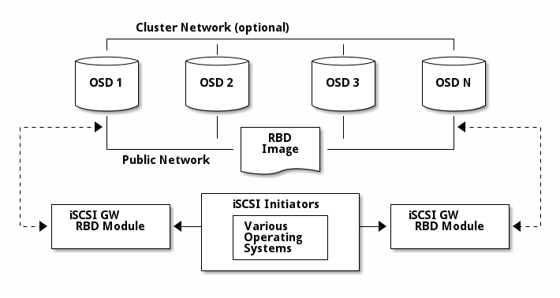

Notice
This document is for a development version of Ceph.
Ceph iSCSI Gateway
The iSCSI Gateway presents a Highly Available (HA) iSCSI target that exports RADOS Block Device (RBD) images as SCSI disks. The iSCSI protocol allows clients (initiators) to send SCSI commands to storage devices (targets) over a TCP/IP network, enabling clients without native Ceph client support to access Ceph block storage. These include Microsoft Windows and even BIOS.
Each iSCSI gateway exploits the Linux IO target kernel subsystem (LIO) to provide iSCSI protocol support. LIO utilizes userspace passthrough (TCMU) to interact with Ceph’s librbd library and expose RBD images to iSCSI clients. With Ceph’s iSCSI gateway you can provision a fully integrated block-storage infrastructure with all the features and benefits of a conventional Storage Area Network (SAN).

Brought to you by the Ceph Foundation
The Ceph Documentation is a community resource funded and hosted by the non-profit Ceph Foundation. If you would like to support this and our other efforts, please consider joining now.